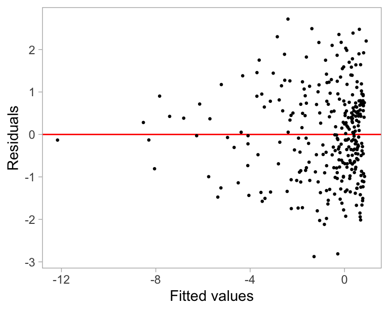

3 Automated assessment of residual plots with computer vision models
Plotting residuals is a standard practice in linear regression diagnostics, essential for identifying deviations from model assumptions such as linearity, homoscedasticity, and normality. Visual inference provides an inferential framework to assess whether residual plots contain patterns inconsistent with model assumptions, typically using a lineup protocol. However, the lineup protocol’s reliance on human judgment limits its scalability. This study addresses this limitation by automating the interpretation of residual plots using computer vision models. We develop a distance measure based on Kullback-Leibler divergence to quantify the disparity between the residual distribution of a fitted classical normal linear regression model and the reference distribution. We propose a computer vision model to estimate this distance from residual plots, facilitating formal statistical testing and bootstrapping techniques to assess model specification. Our computer vision model shows strong performance, though it performs slightly less effectively on non-linearity visual patterns. The statistical tests based on the estimated distance exhibit lower sensitivity than conventional tests but higher sensitivity than human visual tests. Examples demonstrate the method’s effectiveness across different scenarios, highlighting its value in automating the diagnostic process and supplementing traditional methods.
3.1 Introduction
Plotting residuals is commonly regarded as a standard practice in linear regression diagnostics (see Belsley et al. 1980; Cook and Weisberg 1982). This visual assessment plays a crucial role in identifying deviations from model assumptions, such as linearity, homoscedasticity, and normality. It also helps in understanding the goodness of fit and various characteristics of the model.
Generating a residual plot in most statistical software is often as straightforward as executing a line of code or clicking a button. However, accurately interpreting a residual plot can be challenging. A residual plot can exhibit various visual features, but it is crucial to recognize that some may arise from the characteristics of predictors and the inherent randomness of the error, rather than indicating a violation of model assumptions (Li et al. 2023). Consider Figure 3.1 as an example, the residuals display a triangular shape pointing to the left. While this might suggest heteroskedasticity, it is important to avoid over-interpreting this visual pattern. In this case, the fitted regression model is correctly specified, and the triangular shape is actually a result of the skewed distribution of the predictors, rather than indicating a flaw in the model.
The concept of visual inference, as proposed by Buja et al. (2009), provides an inferential framework to assess whether residual plots indeed contain visual patterns inconsistent with the model assumptions. The fundamental idea involves testing whether the true residual plot visually differs significantly from null plots, where null plots are plotted with residuals generated from the residual rotation distribution (Langsrud 2005), which is a distribution consistent with the null hypothesis H_0 that the linear regression model is correctly specified. Typically, the visual test is accomplished through the lineup protocol, where the real residual plot is embedded within a lineup alongside several null plots. If the real residual plot can be distinguished from the lineup, it provides evidence for rejecting H_0.
The practice of delivering a residual plot as a lineup is generally regarded as a valuable approach. Beyond its application in residual diagnostics, the lineup protocol has integrated into the analysis of diverse subjects. For instance, Loy and Hofmann (2013, 2014, 2015) illustrated its applicability in diagnosing hierarchical linear models. Additionally, Widen et al. (2016) demonstrated its utility in geographical research, while Krishnan and Hofmann (2021) explored its effectiveness in forensic examinations.
However, as pointed out by Li et al. (2023), a primary limitation of the lineup protocol lies in its reliance on human judgments. Unlike conventional statistical tests that can be performed computationally in statistical software, the lineup protocol requires human evaluation of images. This characteristic makes it less suitable for large-scale applications, given the associated high labour costs and time requirements.
There is a substantial need to develop an approach that alleviates analysts’ workload by automating repetitive tasks and providing standardized results in a controlled environment. The large-scale evaluation of lineups is impractical without the use of technology and machines.
The utilization of computers to interpret data plots has a rich history, with early efforts such as “Scagnostics” by Tukey and Tukey (1985), focusing on scatter plot diagnostics. Wilkinson et al. (2005) expanded on this work, introducing graph theoretic scagnostics, which encompassed computable measures applied to planar proximity graphs. These measures, including, but not limited to, “Outlying”, “Skinny”, “Stringy”, “Straight”, “Monotonic”, “Skewed”, “Clumpy”, and “Striated” aimed to characterize outliers, shape, density, trend, coherence and other characteristics of the data. While this approach has been inspiring, there is a recognition (Buja et al. 2009) that it may not capture all the necessary visual features that differentiate true residual plots from null plots. A more promising alternative entails enabling machines to learn the function for extracting visual features from residual plots. Essentially, this means empowering computers to discern the crucial visual features for residual diagnostics and determining the method to extract them.
Modern computer vision models are well-suited for addressing this challenge. They rely on deep neural networks with convolutional layers (Fukushima and Miyake 1982). These layers leverage hierarchical patterns in data, downsizing and transforming images by summarizing information in a small space. Numerous studies have demonstrated the efficacy of convolutional layers in addressing various vision tasks, including image recognition (Rawat and Wang 2017). Despite the widespread use of computer vision models in fields like computer-aided diagnosis (Lee and Chen 2015), pedestrian detection (Brunetti et al. 2018), and facial recognition (Emami and Suciu 2012), their application in reading data plots remains limited. While some studies have explored the use of computer vision models for tasks such as reading recurrence plots for time series regression (Ojeda et al. 2020), time series classification (Chu et al. 2019; Hailesilassie 2019; Hatami et al. 2018; Zhang et al. 2020), anomaly detection (Chen et al. 2020), and pairwise causality analysis (Singh et al. 2017), the application of reading residual plots with computer vision models represents a relatively new field of study.
In this paper, we develop computer vision models and integrate them into the residual plots diagnostics workflow, addressing the need for automated visual inference. The paper is structured as follows. ?sec-model-specifications discusses various specifications of the computer vision models. ?sec-distance-between-residual-plots defines the distance measure used to measure model violations. ?sec-distance-estimation explains how the computer vision models estimate this distance measure. ?sec-statistical-testing covers the statistical testing based on the estimated distance. Sections ?sec-data-generation, ?sec-model-architecture, and ?sec-model-training detail the data preparation, model architecture, and training process, respectively. The results are presented in ?sec-model-results. Finally, we conclude with a discussion of our findings and propose ideas for future research directions.